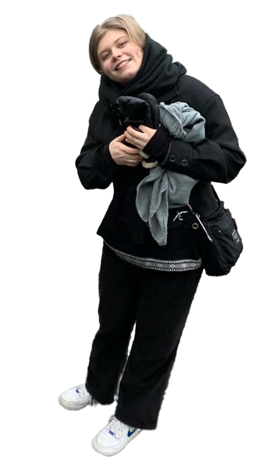
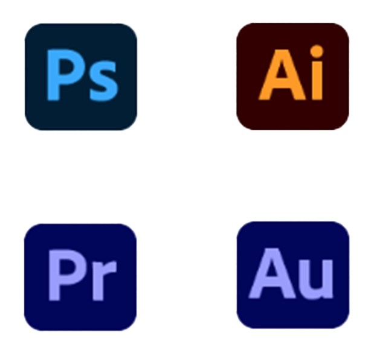
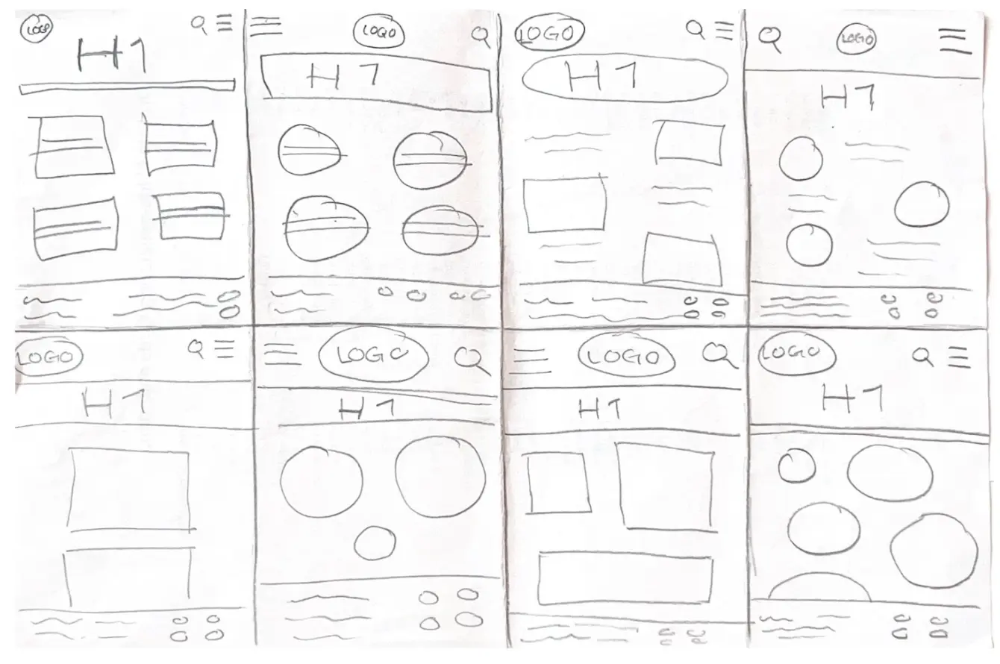
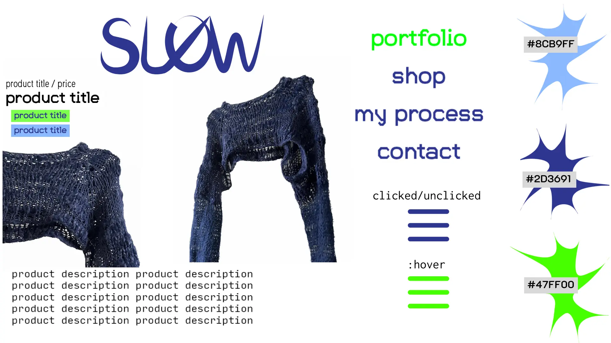
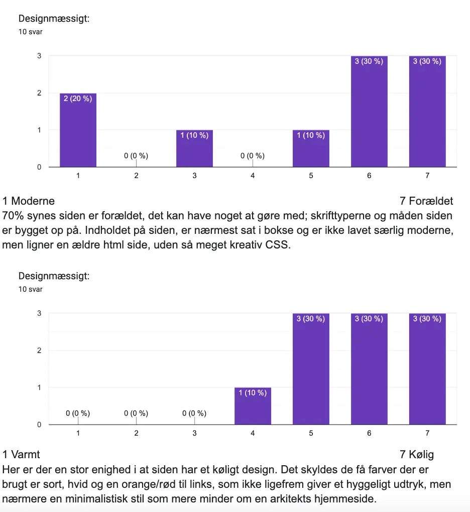

Om mig
Her til venstre ser du mig, Selma. Jeg er 23 år, opvokset i Svendborg og bor nu på grænsen til Nørrebro.
Mit sidste faste arbejde før jeg startede på Multimedieuddannelsen var, 3 år som advanced IT supporter, ved det tidligere NNIT (nu Aeven).
Herfra har jeg taget mange færdigheder med mig, som jeg kan bruge i min dagligdag som studerende på KEA.
Ting til CV'et
Mine færdigheder har også udviklet sig, heldigvis! Herunder nogle eksempler:
Adobe Programmer
Igennem flere af temaerne har jeg brugt Photoshop, Illustrator, Premiere Pro og Audition.
Jeg har bl.a. brugt programmerne til at redigere billeder, lyd & videoer, og tegne/illustrere i Illustrator.
Forarbejde
For at kunne organisere kreativt arbejde, er det vigtigt at kunne forberede sig. Forarbejde er med til at gøre ens process hurtigere, såsom Moodboards, Storyboards, Styletiles, Crazy8, Wireframes osv, listen er lang.
Dog gør det ens arbejde meget lettere og det er vigtigt at kunne tage videre med sig når man skal ud på et hurtigtvækstende arbejdsmarked.
Belæg for sine ændringer
Under processen, vil der være små designs, som ikke sidder helt som det skal, eller noget man synes sidder perfekt, der ender med at skulle redigeres, eller fjernes.
Det kan være smart at få skub i den rigtige retning med hjælp af tests, til at tilføje en funktion/andet under processen. Feks. kan BERT-testen hjælpe på sidens design eller opsætning. Udover den har vi tænke-højt-test og 5-sekunder-test, som kan hjælpe med formål, modtager osv.
